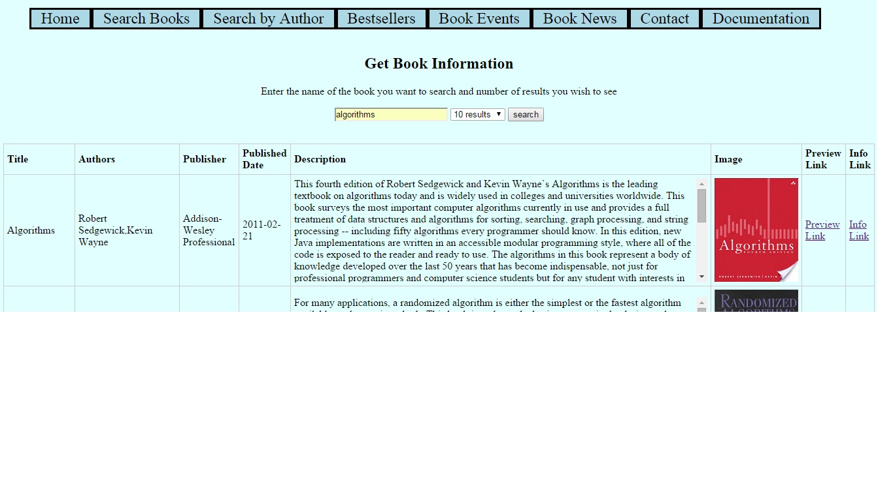

Search for books: consists of a textbox in which the user enters a book name or isbn for searching about books and the number of results one wishes to see.
- The options vary from a maximum of 10 results to a maximum of 50 results.
- The main reason of keeping such varied limits is that for most of the books the number of results fetched is fewer than 50.
- Apart from some books like Bible and other religious books with varied publications, most of them can be easily incorporated in the 50 result limit.
- On button click or enter command, that search value is rendered in a table which has title, author, publisher, published date, description, preview and info links.
- This page is completely responsive and it turns into a vertical table for mobile phones and tablets.
- The search results are returned from Google Books API that fetches data using JSON
- If a user enters garbage value or a book name that doesn't exist, then the user is prompted to search again with a more precise name.

The above pic is a demonstration of valid data input by the user.

The above pic is a demonstration of empty/null data input by the user.
- There exist scenarios where the user input's a garbage value or a value for which there exist no results.
- These searches are handled using javascript, with the help of the predefined function data.hasOwnProperty(argument).

The above pic is a demonstration of invalid data input by the user.
Further Work : The page can be made more visually appealing by applying more css to the table.
Source Code
ASPX Code
JS Code
CSS Code